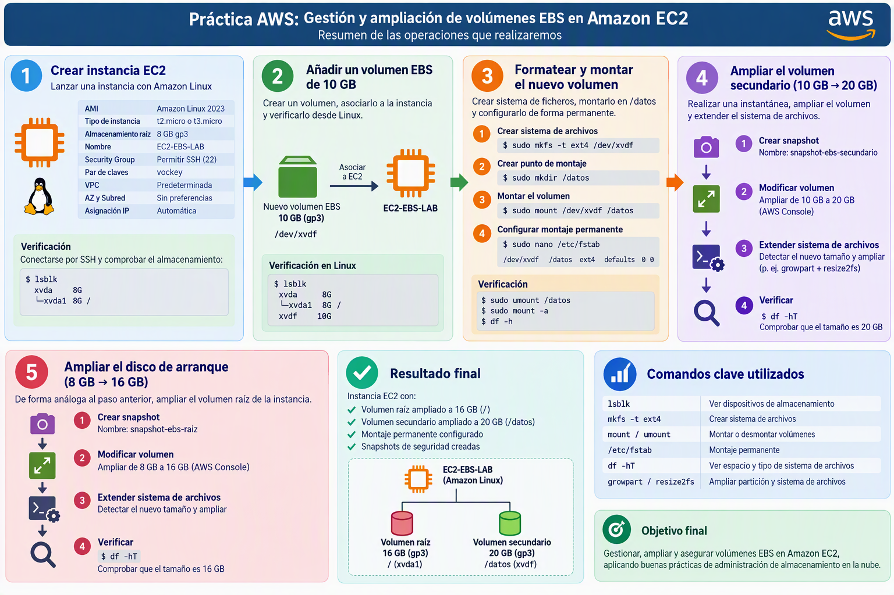

Práctica AWS: Gestión y ampliación de volúmenes EBS en Amazon EC2
Objetivos

En esta práctica trabajaremos los siguientes contenidos:
- Crear una instancia Amazon EC2 con Amazon Linux.
- Asociar un volumen EBS adicional.
- Identificar dispositivos de almacenamiento en Linux.
- Crear particiones y sistemas de ficheros.
- Montar volúmenes de forma permanente mediante
/etc/fstab. - Realizar instantáneas (snapshots) de seguridad.
- Ampliar un volumen EBS existente y extender el sistema de archivos.
- Ampliar el volumen raíz (disco de arranque) de una instancia EC2.
Parte 1. Creación de la instancia EC2
1. Crear una instancia Amazon EC2
Características
| Parámetro | Valor |
|---|---|
| AMI | Amazon Linux 2023 |
| Tipo de instancia | t{x}.micro de capa gratuíta más actual |
| Almacenamiento raíz | 8 GB gp3 |
| Nombre | EC2-EBS-LAB |
| Security Group | Permitir SSH (22) |
| Par de claves | vockey |
| VPC | Predeterminada |
| AZ y Subred | Sin preferencias |
| Asignación IP | Automática |
Verificación
Conectarse al EC2 mediante SSH o desde el botón Conectar de la consola:
Comprobar el almacenamiento disponible:
lsblk
Resultado esperado:
xvda 8G
└─xvda1 8G /
Parte 2. Añadir un volumen EBS de 10 GB
1. Crear el volumen
Desde AWS Console:
EC2 → Elastic Block Store → Volumes → Create Volume
Parámetros:
| Configuración | Valor |
|---|---|
| Tipo | gp3 |
| Tamaño | 10 GB |
| Zona de disponibilidad | La misma que la EC2 |
2. Asociar el volumen
Asociamos el volumen a la máquina EC2
Dispositivo sugerido:
/dev/xvdf
3. Verificar desde Linux
lsblk
Resultado aproximado:
xvda 8G
└─xvda1 8G /
xvdf 10G
Parte 3. Formatear y montar el nuevo volumen
1. Crear el sistema de archivos
Guiándote por los pasos de la práctica anterior haz los siguientes pasos:
-
Crear sistema de archivos
-
Crear punto de montaje en
/datos -
Montar el volumen
-
Configurar el montaje permanente en
/etc/fstab
2. Verificar /etc/fstab
sudo umount /datos
sudo mount -a
Comprobar:
df -h
Si el volumen vuelve a montarse correctamente la configuración es válida.
Parte 4. Ampliación del volumen secundario
Escenario
Vamos a ampliar el volumen secundario pasándolo de 10GB a 20GB. Antes de ampliarlo, haremos una instantánea que nos servirá de copia de seguridad:
-
Creamos snapshot con nombre
snapshot-ebs-secundario -
Modificamos el volumen para ampliarlo a 20GB. Guía
-
Ampliamos el sistema de archivos después de cambiar el tamaño del volumen. Guía.
-
Comprueba con el comando
df -hTque se ha ampliado correctamente el sistema de archivos.
Parte 5. Ampliación del disco de arranque
De forma análoga al apartado 4, vamos a duplicar el almacenamiento del disco de arranque pasándolo de 8GB a 16GB. Antes de ampliarlo, haremos una copia de seguridad.